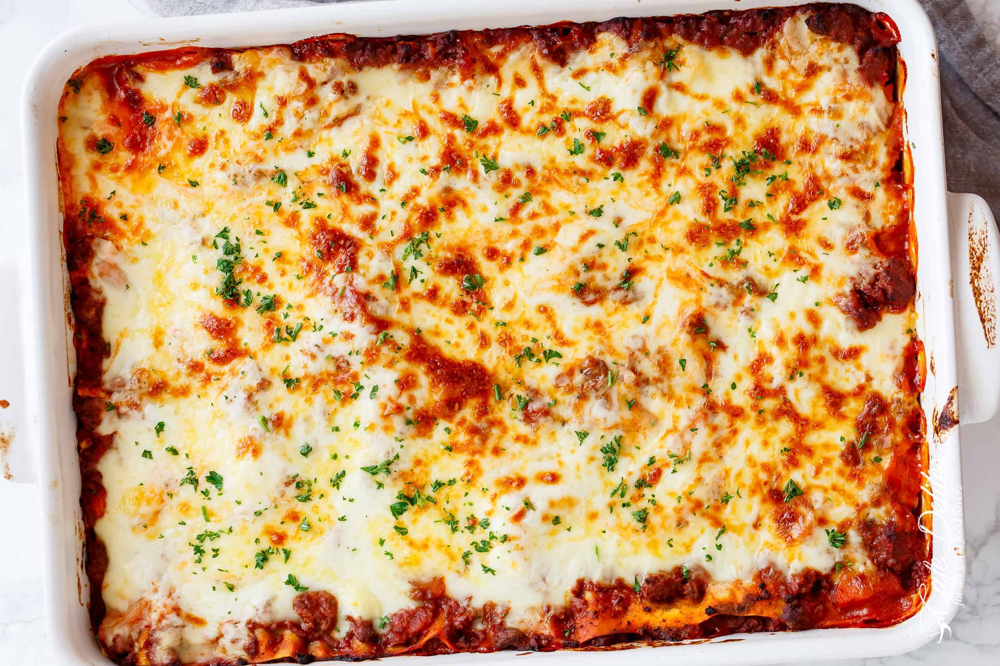

Lasagna

Description
Frolicking amongst the turgid acres of Carlsbad's phenomenal flower fields, under
the oppressively temperare spring skies, I'd often recall Alyssa Edwards'
firm family favourite; a recipe unlike any ever before imagined...
After decades of scouring and scrounging the oft inscrutbale and largely dead-ended
avenues of notebooks and notes and tomes, I happened upon a picturesquely quaint
building emblazoned with the moniker "Berghain"
It was herein that I discovered, etched on a wall, and now present
to you the only, life-affirming, Lasagna recipe you never knew you needed.
Ingredients
Meat Sauce
- 1 T olive oil
- 1 onion finely chopped
- 1 carrot finely diced
- 4 cloves garlic minced
- 700g ground beef mince
- 300g ground pork mince
- 700g passata
- 410g crushed tomatoes
- 3 T tomato paste
- 2 beef or vegetable bouillon cubes crushed
- 1 t dried oregano
- 1 t dried basil
- 1/2 t sugar
- 1 t salt
- 1 t black pepper
Parmesan Béchamel
- 4 T butter
- 1/4 c flour
- 3 1/2 c milk
- 1 c parmesan shredded
Lasagna Body-ody-ody
- 375g lasagna sheets preferably fresh
- 500g mozzarella shredded
- 2 T fresh parsley finely chopped
Method
Meat Sauce
- Heat oil in a large pot over medium heat, adding in the onion & carrots, &
cook for 8-10 minutes, or until softened. Add in the garlic and sauté for about
1 minute, until fragrant.
- Add beef & pork & cook while breaking it up with the end of your
spoon, until browned.
- Pour in the Passata, crushed tomatoes, tomato paste, crushed bouillon & dried
herbs. Mix well to combine & bring to a gentle simmer. Season with desired amount
of salt, pepper, and sugar. Cover & cook for about 20-30 minutes, occasionally
mixing, until the sauce has thickened slightly & meat is tender.
- Adjust salt, pepper & dried herbs to your taste.
Parmesan Béchamel
- In a large pot, melt butter over medium heat. Remove from hot plate; add the flour & whisk for about 30 seconds, or until well blended.
- Place pot back onto stove, reduce heat down to low & slowly whisk in 1 cup
of the milk until well combined. Once well blended, add the remaining milk
in 1 cup increments, mixing well after each addition, until all the milk is
used & sauce is free from lumps. If the sauce is too thick, add a little more
milk until it turns into a nice and creamy consistency.
- Increase heat to medium & continue cooking sauce while stirring occasionally
until it thickens (about 6-7 minutes) & coats the back of your wooden spoon.
- Add in the parmesan cheese & remove from heat. Season with salt & pepper & mix until the cheese is melted through.
Assembly
- Preheat oven to 180°C.
- Spoon about 1 cup of meat sauce on the base of a 23x33cm baking dish, then cover with lasagna sheets. (Trim sheets to fit over the meat if needed.) Layer with 2 cups of meat sauce (or enough to cover pasta), 1 cup of white sauce & half of the mozzarella cheese. Repeat layers (leaving the remaining cheese for the top).
- Pour the remaining meat sauce & white sauce over the last layer of lasagna sheets & top with the remaining mozzarella cheese. Bake for 25 minutes or until golden & bubbling.
- Garnish with parsley & let rest for about 10 minutes before slicing & serving.
- Enjoy!
Some Thoughts
If you can't find or don't have access to fresh, you can use dried per below:
No Cook or Instant Noodles can be used without pre-boiling (check the packet instructions first). You can assemble as normal. To ensure the pasta has enough liquid to cook through while the lasagna is baking, we normally add about 1/2 cup of water to our sauce when using INSTANT.
Pre Boil Or Pre Cook Pasta Sheets need to be boiled first before assembly. Follow the instructions on the packet. Add a couple of tablespoons of olive oil into the water to prevent the sheets from sticking together, and stir them occasionally with a wooden spoon. Transfer each cooked lasagna sheet carefully into a large bowl or pot filled with cool water to help stop the cooking process. Leave them in there until ready to use. This helps prevent them from sticking together or drying out.